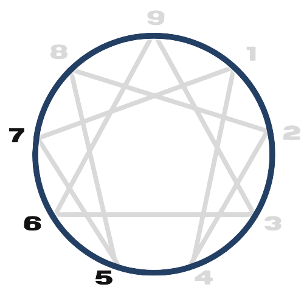

TIPO 07
(O sonhador)
Eles costumam pensar que não puderem ter o que realmente os deixará satisfeitos, se divertirão de qualquer maneira.
Os 7 ficam entusiasmados com a corrida de ideias e com o prazer de serem espontâneos, preferindo visões gerais amplas e a empolgação dos estágios iniciais do processo criativo a investigar um único tópico em profundidade.
CARACTERÍSTICAS
Positivas
Versatilidade, entusiasmo, otimismo, criatividade, busca por experiências variadas, adaptabilidade, mente aberta, energia positiva, capacidade de inspirar os outros, curiosidade, apreciação pelo prazer, pensamento ágil, resiliência, habilidade de ver oportunidades, imaginação vívida, sociabilidade, disposição para correr riscos, espontaneidade, capacidade de superar desafios com humor, apreciação pela beleza da vida.
Negativas
Evitação de desconforto emocional, tendência a fugir de situações desagradáveis, dificuldade em lidar com emoções negativas, propensão à impulsividade, busca incessante por estímulos e distrações, resistência à restrição ou limitação, tendência à superficialidade, evitação de compromissos, desafios em enfrentar responsabilidades, propensão à dispersão de energia, dificuldade em manter o foco, resistência à introspecção profunda, medo de se sentir preso ou entediado, propensão a evitar confrontos emocionais.
INFÂNCIA

As regras são necessárias, mas essas crianças as consideram insuportavelmente limitantes. A grama é sempre mais verde logo além da linha da cerca. Quando são restringidos por algum tipo de limite, eles se retraem em suas mentes, onde confiam em sua imaginação para fornecer todo o entretenimento de que precisam até que as restrições terminem.
Em seus anos de desenvolvimento, eles ouviram a mensagem dolorosa: “Você está por sua conta. Ninguém está aqui para apoiar ou cuidar de você.” Em resposta, disseram: “Eu farei isso se ninguém mais o fizer”. Independentemente dos fatores subjacentes, as crianças do eneatipo 07 adotam uma estratégia de planejar aventuras, entreter ideias cativantes e imaginar uma vida onde o céu é o limite para difundir emoções assustadoras que eles temem que os dominem.

NO TRABALHO
Viajar pelo mundo explorando novas culturas, conhecendo pessoas fascinantes, comendo refeições estranhas e nunca sabendo o que está por vir são ótimos ambientes para os 07. Eles precisam encontrar trabalho em ambientes criativos e de ritmo acelerado que lhes proporcionem independência, uma variedade de atividades e flexibilidade. Também são sonhadores e iniciadores. Sua capacidade de sintetizar informações de uma ampla gama de áreas temáticas, identificar padrões invisíveis e conectar os pontos dentro de corpos complexos de conhecimento os tornam geradores de ideias prolíficos.
Amigáveis e populares, eles trazem variedade e alguma espontaneidade muito necessária para o local de trabalho. Eles não gostam que lhes digam o que fazer, então trabalhar para um líder controlador que impõe muitos limites a eles raramente funciona bem. Às vezes, eles manipulam figuras de autoridade com charme e carisma, mas essa não é uma situação sustentável a longo prazo.
TRÍADE: MENTAL
A maneira como esta tríade percebe a vida em termos de encontrar um lugar seguro e uma maneira segura de avançar. Eles processam o que observaram principalmente através de suas mentes, e a realidade pode se tornar aquilo que constroem em seus pensamentos mais do que o que está acontecendo. Os tipo 7 temem seu mundo interior. Sentimentos de dor, perda, privação e ansiedade geral são aspectos que os tipo 7 prefeririam evitar o máximo possível.
SUBTIPOS: 7w6, 7w8
As asas nos permitem individualizar os 9 tipos que são os mais gerais do Eneagrama. Você percebe que com os 9 tipos mais as 2 asas, estamos falando de 18 tipos do Eneagrama. Cada asa é um subtipo do tipo geral.